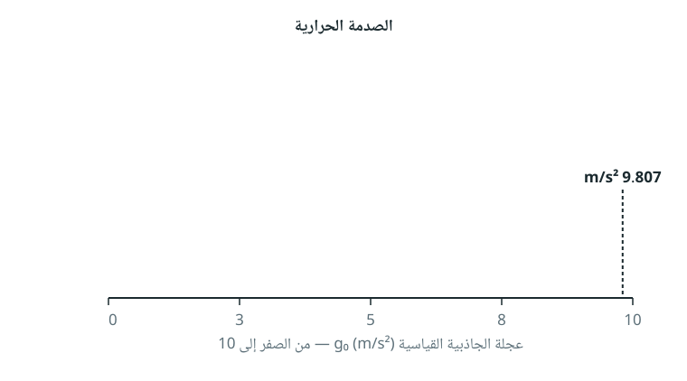

الصدمة الحرارية
Thermal shock
الصدمة الحرارية هي إجهادات داخلية تنشأ حين يتغير سطح مادة بسرعة حرارية أكبر من قدرة المادة على توصيل الحرارة، فيتقيّد تمدد السطح ببرودة أو حرارة القلب وينشأ إجهاد قد يسبب تشققاً.
الصدمة الحرارية ظاهرة تنشأ عند تغيّر مفاجئ في درجة حرارة سطح مادة، فيتمدد السطح أو ينكمش بسرعة بينما يبقى قلبه على حرارته الأصلية. هذا التقييد ينتج إجهاداً حرارياً يتناسب مع معامل يونغ ومعامل التمدد ومع فرق الحرارة: σ ≈ E·α·ΔT/(1 − ν). وإذا تجاوز الإجهاد مقاومة الشد للمادة نشأ تشقق. ومقاومة المادة للصدمة الحرارية تُقاس بمعامل R = σ_f·(1 − ν)/(E·α)، فكلما زادت مقاومة الشد وانخفض التمدد ويونغ زادت المقاومة. مثال: زجاج بـE = 70 GPa وα = 9.0×10⁻⁶ K⁻¹ وν = 0.22 وفرق حراري 100 K: σ = 70×10⁹ × 9.0×10⁻⁶ × 100/0.78 = 80.8 MPa.
كيف تعمل الظاهرة؟
حين يتغير سطح مادة بسرعة، لا يستطيع القلب أن يلحق به حرارياً لأن التوصيل يحتاج زمناً. فينتج تدرّج حراري حادّ بين السطح والقلب. السطح يحاول التمدد أو الانكماش بحرية لكنه مقيّد بالقلب الذي لم يتغير، فينشأ إجهاد: عند التبريد السريع ينكمش السطح فيُشدّ من الداخل (شدّ سطحي)، وعند التسخين السريع يتمدد السطح فيُضغط من الداخل (ضغط سطحي). والمواد الهشة كالزجاج والسيراميك أضعف في الشدّ منها في الضغط، فتنكسر بالتبريد السريع أكثر من التسخين. ولهذا تُبرَّد القطع الزجاجية السميكة ببطء في التصنيع.
العلاقة بالأرقام
σ_th ≈ EαΔT/(1 − ν)، وR = σ_f(1 − ν)/(Eα) بوحدة K، وΔT_critical = R. وعدد بيو Bi = hL/k يقيس سرعة التغيّر السطحي نسبةً إلى التوصيل. مثال عددي: E = 70 GPa، α = 9.0×10⁻⁶، ν = 0.22، ΔT = 100 → σ = 80.8 MPa؛ وR = 50×10⁶ × 0.78/(70×10⁹ × 9.0×10⁻⁶) = 61.9 K.
مفاهيم متقاربة
يُفرَّق بين الصدمة الحرارية والإجهاد الحراري الساكن: الأول يخص التغيّر السريع والتدرّج الداخلي، والثاني يخص التقييد الميكانيكي ولو تغيّرت الحرارة ببطء. ويُفرَّق بين مقاومة الصدمة ومعامل المقاومة R: الأول وصف نوعي، والثاني رقم مقيس بوحدة كلفن. ويُفرَّق بين الصدمة الحرارية والكلال الحراري: الكلال يحتاج دورات، والصدمة قد تحدث في الأولى. والخطأ الشائع أن تُقارن مواد بمقاومة الشد وحدها؛ R يجمع σ_f وE وα وν معاً.
حدود التطبيق
الصيغة σ ≈ EαΔT/(1 − ν) تفترض تغيّراً فورياً وتدرّجاً كاملاً، وهي حدّ أعلى؛ في الواقع يعتمد الإجهاد على معدل التبريد وعلى عدد بيو. ولا تنطبق على المواد اللدنة التي ترخي الإجهاد بالتشوّه. ولا تصف الصيغة تشقق المواد المركبة والمواد ذات البنية المعقدة، حيث تلزم نماذج عددية. وأخيراً لا تعطي الصيغة زمن التشقق ولا حجمه، بل تحدد احتمال حدوثه فقط.

| الكمية | القيمة | المصدر |
|---|---|---|
| الإجهاد الحراري في زجاج بفرق 100 K | 80.8 MPa | [2] |
| معامل مقاومة الصدمة الحرارية للزجاج | 61.9 K | [2] |
المصادر
- 1 CODATA Value: standard acceleration of gravity — NIST — CODATA 2022 recommended values (2024). physics.nist.gov/cgi-bin/cuu/Value?gn · اطُّلع عليه 2026-11-21
- 2 The International System of Units (SI), 9th edition (2019) — BIPM — Bureau International des Poids et Mesures (2019). www.bipm.org/en/publications/si-brochure · اطُّلع عليه 2026-11-21
- 3 CODATA Value: Avogadro constant — NIST — CODATA 2022 recommended values (2024). physics.nist.gov/cgi-bin/cuu/Value?na · اطُّلع عليه 2026-11-21
استشهد بهذا المصطلح
الصيغتان مبنيتان من بيانات الصفحة نفسها: العنوان والتاريخ ورابط النسخة المنشورة.
الصدمة الحرارية — Thermal shock. (2026). ديوان المعرفة — انفراد. https://infiradev.com/diwan/terms/term-thermal-shock.html
@misc{term-thermal-shock2026,
title = {الصدمة الحرارية},
titleaddon = {Thermal shock},
howpublished = {{ديوان المعرفة — انفراد} — مرجع علمي عربي},
year = {2026},
url = {https://infiradev.com/diwan/terms/term-thermal-shock.html},
urldate = {2026-11-26},
note = {مراجعة علمية: hermes (مراجعة معتمدة 2026-11-26)}
}
راجعه: hermes (مراجعة معتمدة 2026-11-26) · 2026-11-26 · آخر تحديث 2026-11-21